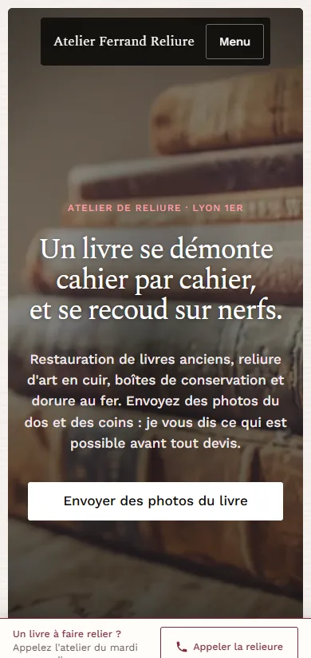

Site d'une cliente
Léana, maquilleuse à Paris
Ses réalisations en photos, ses tarifs et la prise de rendez-vous.
Visiter le site de LéanaCertains sites sont en ligne : vous pouvez les visiter. Les autres sont des démonstrations. Une démonstration montre un commerce imaginaire : elle est toujours étiquetée.
Ces deux sites existent. Cliquez sur une image pour visiter le site.
Ses réalisations en photos, ses tarifs et la prise de rendez-vous.
Visiter le site de Léana

Un portfolio présente une personne et son travail : ici, son parcours, ses réalisations et son CV à télécharger.
Visiter ce portfolioCes quatre commerces sont imaginaires. Nous avons construit leur site pour montrer ce que cela donne dans d'autres métiers. Ils ne sont pas en ligne : il n'y a donc pas de lien.
Votre site, lui, sera construit à partir de vos réponses, pour votre métier.


Ses prestations, sa façon de travailler, et un bouton pour envoyer des photos du livre à restaurer.


Un vitrail en grand dès l'arrivée, le métier dit en une ligne, et un bouton pour demander un devis.


Ses couteaux de poche, leurs prix, son parcours, et un bouton pour demander un devis.


Ses cafés et leurs prix, sur un fond sombre, et un bouton pour venir à la boutique.
Dix minutes de questions simples sur votre activité. Nous préparons ensuite votre site et vous le montrons. Vous décidez après l'avoir vu.
Commencer gratuitementle temps d'un café